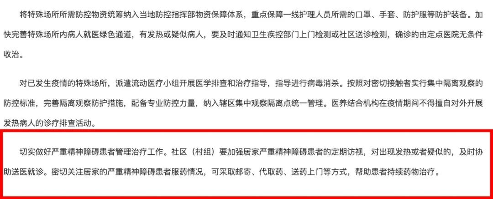

武汉战疫50天：闯关
原文链接 备份链接 24.02.2020本文字数：3380，阅读时长大约6分钟 导读：全国各地驰援力量也投入到了帮助武汉爬坡跨坎的大战之中。 作者 | 第一财经 吴绵强 2月20日晚上，在武汉江夏区方舱医院隔离的每一位患者都收到了一颗“ …

急需 A+ 型新冠肺炎康复患者血浆 —— 2 月 16 日，武汉市精神卫生中心一医生，生命垂危于金银潭医院。
见此求助信息，柳樱更为焦虑。
正为母亲（精神分裂 4 年）寻求入院治疗的她，意识到专业机构或已「沦陷」，无法正常应诊。
柳樱的担忧，早于 2 月 8 日即现征兆。据《中国新闻周刊》报道，武汉市精神卫生中心发生院内感染，COVID-19 确诊医患约 80 人。
此外，_「偶尔治愈」_确认到，同于 2 月 16 日，武汉市精神卫生中心向感控专家请求支援；原因在于，其将作为定点医院，接收新冠肺炎合并精神疾病患者。
但柳樱的母亲，两次核酸检测前后阳阴不同。从而被拒之武汉市精神卫生中心在内的相关医院门外。
同时，特殊医务人员的重压解决，却受阻于反馈渠道的封堵。
多有武汉精神专科医护对_「偶尔治愈」_表示，疑似或确诊新冠肺炎病例出现时，相比于综合性医院的应急及隔离，更为滞后；而封闭管理的常态，则导致难以预测的风险骤增。
2 月 18 日，国家卫健委发布国务院联防联控机制综合组针对「严重精神障碍患者治疗管理工作」的通知。统计显示，17 省确诊新冠肺炎的严重精神障碍患者 323 名，43 人疑似。
不过，武汉一前线精神科室医师对_「偶尔治愈」_分析道，通知仅限于「严重精神障碍患者」，真实数据尚未明晰外；应对建议亦局限于政策指导，无责任到位式的落地要求。
如此，围绕于精神病患的新冠肺炎防控矛盾，既陷入关注「死角」，又难再引发重视。
院内感染的恐慌
武汉市精神卫生中心辖六角亭及二七两院区，编制床位 950 张，年门急诊量 30 余万人次，为湖北省首家三甲精神专科医院。
综合医务人员及病患家属的信息提供，_「偶尔治愈」_了解到，武汉市精神卫生中心首例新冠肺炎确诊于 1 月 20 日。
在此之后，医院虽有警惕，但相关举措仅限于发热通知。
2 月 7 日，武汉市精神卫生中心一例新冠肺炎病患死亡。1 月 26 日，武汉市精神卫生中心曾联系该病患家属，表示住院同区出现 2 名未被确诊为新冠肺炎的发热病人；2 月 5 日，家属再被告知，病患已呼吸困难，需送入重症监护室。
彼时，武汉市精神卫生中心医患新冠肺炎确诊已达 80 人（医务人员 30 人，住院病患 50 人）。
对此，武汉市精神卫生中心回应道，初期认识不足，也不知晓存在人传人的情况，所以存在疏漏。
但武汉市精神卫生中心的院内感染事件，尚未推动武汉市内精神专科医院或科室的针对性防控升级。

武汉市精卫中心院内感染严重
图源：武汉市精卫中心官微
_「偶尔治愈」_独家获悉，在精神专科上较为典型的武汉钢铁（集团）公司第二职工医院（下称「武钢二院」），即情况危急。
武钢二院虽为三乙医院，但其精神科为市级重点建设专科。疫情期间，由天津医疗队进驻支援。目前，近 200 名精神病患，主要收治于该院专科住院部。
2 月 9 日前，武钢二院疑似及确诊病例隔离区，和专科住院部其余病房集中于同一楼层。医务人员因此存在暴露风险外，10 名精神病患亦感染（ 1 名死亡）。
至 2 月 20 日，仅_「偶尔治愈」_了解到的武钢二院一科室数据显示，新冠肺炎确诊病例已上升至 20 人，疑似 8 人。5 人死亡，9 人又检测转阴隔离。
不仅如此，武钢二院精神专科医护，至今仍缺乏医疗物资保障。口罩，医帽紧缺外，需 6 小时一更的防护服，24 小时仅 1 件配额。
吴今工作于武汉市一专科精神病院，据其透露，相比之下，武钢二院的情况在其所在医院更甚，且无任何诸如医疗队等外界力量援助。
吴今所在医院在疫情爆发时，决定停止接收病患；但自湖北省人民医院及武科大附属天佑医院被确定为新冠肺炎定点医院后，滞留两家医院的部分精神病患，开始转入其所在医院。
之后，院内科室医患陆续出现发热症状，直到近期出现因呼吸衰竭的死亡病例后，医院方安排相关科室人员外出 CT 并提供防护服。
但除却出现死亡病例的科室，该院其他科室的防护服竟然不达标，「从早晨上班到下午，防护服会破损十几处」。
更让吴今忧虑的，是目前该院一名护士已确诊新冠肺炎，「正在医院内部隔离，上报与否未知」。一旦发生院内感染，后果无法想象。
院内感染的警醒，不仅在于诸如武汉市精神卫生中心的国内案例。据韩国 2 月 23 日通报，清道大南医院精神科住院楼栋出现封闭聚集感染，102 名住院病人中，99 人确诊为新冠肺炎。

院外求诊的无助
柳樱已无所适从。
连续联系武汉精神专科医院无果后，她开始考虑，如果母亲未感染，即使「撞运」到相关医院愿意收治，是否又将母亲置于另一危险情形。
但居家隔离，是每一位精神病患家属的困境。柳樱说道，一旦发病，「谁也无法控制」。也正因此，当母亲「闹腾」起来，其身体虚弱的父亲已承受不起。
很多时候，「我也只能躲进卫生间里哭，什么也做不了」。
她甚至「幼稚」却认真地思考过，通过伪造自己和父亲都确诊新冠肺炎的诊断，引起相关部门的重视，将母亲「强制」入院。
如此想法，源于柳樱看到的一则视频新闻：2 月 4 日，因一精神病患家人中 2 名确诊新冠肺炎，湖北十堰市警方破门「缠斗」，将该精神病患送诊。
前述国务院联防联控机制综合组通知中，要求在新冠肺炎疫情期间，乡镇（街道）精神卫生综合管理小组要安排人员，加强居家严重精神障碍患者的定期访视。
对出现发热或者肺炎疑似症状的患者，综合管理小组应当及时协助将其送往就近的发热门诊就诊，如确诊新冠肺炎或者疑似感染入院治疗的，应当告知相关医疗机构患者既往精神疾病史和目前治疗情况。
收治患新冠肺炎的严重精神障碍患者的医疗机构，如不具备精神科疾病诊疗能力，应当及时请精神科医师联络会诊。卫生健康行政部门可指定辖区内精神卫生医疗机构承担对应的联络会诊工作。
但通知内所言的举措，柳樱从未「感受到一分」。
社区除联系核酸检测外，只建议家属密切观察，柳樱无奈道，而目前也几无精神专科医院对新报病患采取开放收治态度。
相关求助信息中，和柳樱一般焦急的不在少数。
一位家属表示，其母亲 2 月 5 日病发后，至今无医院收治，自己也常被母亲殴打，甚至会上街攻击路人。
另多有家属反映，因精神病患难以沟通，不佩戴口罩「出走」的情况时有发生，于己于人，皆为风险。警方尽力寻回后，又只能迁怒于家属缺乏照看。
武汉一区级精神病院医生对_「偶尔治愈」_表示，疫情期间停止接诊，是在诸如武汉精神卫生中心等大型医院都出现院内感染情况下的「自我保护」。
首先，精神专科医务人员本身对传染病学的知识就极为匮乏，甚至重症急救都存在操作瑕疵；该医生表示，加之精神病患无法如正常群体般，及时反馈病情并配合治疗，且精神病院均为集中管理，封闭看护，一旦新冠肺炎感染，院内医患全部「中枪」的可能，也绝非危言耸听。
当养老院等特殊机构，逐渐被重视起来后，希望政府对精神病患及关联医院的防控指导，进行讨论和重视，上述医生强调，仅凭院方和家属，终究无能为力。

防控政策的缺位
2019 年 10 月，武汉市卫健委公布 2018 年度部门决算显示：管理严重精神障碍患者 3.72 万人，规范化管理率达 84.6% 外，传染病疫情报告及时率为 99.9%。
但在新冠肺炎的疫情防控中，此报告数据的现实价值似未能对应体现。
此外，曾为武汉市红十字会志愿者的李达告诉_「偶尔治愈」_，对特殊群体的防控缺位的关键原因之一，也在于舆论和情绪的误导。
2 月初，省市红会调拨物资和款项至武汉市优抚医院时，即广被指责和批判。原因在于武汉市优抚医院（二级综合医院）前身为武汉市民政局精神病医院。
李达说道，彼时，由武汉市精神卫生中心引发的精神病患感染，尚为引发任何关注。加之红会深陷质疑，对精神专科医院或精神科见长医院的物资调配，极易引发众怒。
但据李达回忆，武汉市优抚医院医生曾对其表示，早于 2020 年 1 月，该院即发现住院精神病患出现集中发热情况并据此确信新冠肺炎的人传人特征。
八点建闻的相关报道中，亦对李达所言进行证实。但针对武汉市优抚医院的汇报，上级疾控部门并未在意。
直至前述 2 月 18 日，国务院联防联控机制综合组通知发布后，武汉市新冠肺炎疫情防控指挥部于 2 月 20 日发布通知，方涉及精神病患等特殊困难群体的指导意见。
防控指挥部通知表示，将特殊场所所需防控物资统筹纳入当地防控指挥部物资保障体系，重点保障一线护理人员所需的口罩、手套、防护服等防护装备。
同时，加快完善特殊场所内病人就医绿色通道，有发热或疑似病人，要及时通知卫生疾控部门上门检测或社区送诊检测，确诊的由定点医院无条件收治。
此外，社区（村组）要加强居家严重精神障碍患者的定期访视，对出现发热或者疑似的，及时协助送医就诊。密切关注居家的严重精神障碍患者服药情况，可采取邮寄、代取药、送药上门等方式，帮助患者持续药物治疗。
但就柳樱及相关求助者的反馈，及前述武钢二院等情况可知，相比于国务院联防联控机制综合组通知，相对更为具体的武汉防控指挥部通知，同样到位存疑。

难以落实到位的相关通知
图源：湖北省人民政府网站截图
2 月 23 日，湖北省委书记应勇主持召开省委常委会会议，要求加强监狱、民营医疗机构、养老院等特殊群体及重点部位的防控。
虽专科精神病院及精神病患群体未被明确强调，柳樱则期盼高层对特殊群体的直接「关照」，将继续推动精神病患问题的切实改观。

补救举措的模糊
目前，武汉市精神卫生中心已于金银潭医院开设专项病区，主要诊治该院确诊的新冠肺炎医患。此外，在武汉精神卫生中心内，则设置隔离病区两处，以应对疑似病例。
2 月 9 日，武汉市精神卫生中心曾回应媒体表示，具体情况及跟进数据，将在其官网微信「推出」。但至今尚无进一步公示。
_「偶尔治愈」_了解到，武汉市精神卫生中心正在国家卫健委援武汉感控专家等指导下，进行防控改造。其二七院区的住院楼，将作为新冠肺炎的收治隔离病区，进行新冠肺炎并精神病患救治。
作为武汉市精神疾病诊疗主力，武汉市精神卫生中心的再度接诊开放，极为关键。但其院区改造具体成型时间及规划接诊量，目前亦无明确信息。
另在武汉外的湖北县市，相关举措正在同步进行。
网传胡场精神病院患者「全部感染」后，仙桃市卫健委介入表示，对 130 名在院病人及 49 名医务人员进行核酸检测及相关诊查，确诊新冠肺炎患者 18 例，已安排进入当地定点医院治疗。
在孝感市，其社会福利和医疗康复中心，则派驻相关专业医务人员，与当地新冠肺炎接诊医院合作，对疑似和确诊新冠肺炎的精神病患进行协助治疗。
但工作开展并不容易。据楚天都市报对新冠肺炎病患「出逃」消息的辟谣报道，事件起因即为一名疑似新冠肺炎的精神病患，击穿墙壁夹板后，离开病区。
此外，就尚未确无新冠肺炎症状，但急需入院治疗的精神病患，武汉外的湖北县市专科病院，同样收治「谨慎」。

针对疫情中精神病患的相关评论
图源：新浪微博截图
孝感所辖镇村的一名精神病患家属对_「偶尔治愈」_表示，相关机构竟答复，除非发生精神病患实际且严重的「肇事肇祸」情形，方有希望被专业精神病院接收。
综上，目前湖北所涉的精神病患防控的最新数据及具体救治方案，依旧模糊不清。
如此情形下，柳樱却在社交平台看见太多的争议，直接指向精神病患是否应「让位」，以「节约」医疗资源，保护医务人员等。
一精神科医生则留评感慨道：疫情之下，生命不该如此被「衡量」。
（柳樱、吴今、李达为化名 ）

（主笔更多好文，可点击「阅读原文」）
撰文：左异
封面图来源：站酷海洛
_— Tips —_
我们的新书《生死之间》出版了
可识别下方图片中的二维码购买

偶尔治愈
to-cure-sometimes
——
记录人与疾病、衰老、死亡的
相处方式

偶尔治愈 | 常常帮助 | 总是安慰
左异
长按二维码向我转账
受苹果公司新规定影响，微信 iOS 版的赞赏功能被关闭，可通过二维码转账支持公众号。
原文链接 备份链接 24.02.2020本文字数：3380，阅读时长大约6分钟 导读：全国各地驰援力量也投入到了帮助武汉爬坡跨坎的大战之中。 作者 | 第一财经 吴绵强 2月20日晚上，在武汉江夏区方舱医院隔离的每一位患者都收到了一颗“ …
原文链接 备份链接 【财新网】（记者 吴红毓然 王梦遥 杨睿 冯华妹 唐爱琳 苑苏文）2月23日，是医护人员的又一个苦难日。 这一天，湖北省武汉市协和江北医院（武汉市蔡甸区人民医院）、江苏省南通启东市卫健委、海南省卫健委、湖北省孝感市中心 …
原文链接 备份链接 图片来源：pexels 文：央视新闻 孙牧宁 近日，新加坡卫生部门通报称，一名57岁的女性同时确诊感染登革热和新冠病毒肺炎，这是新加坡首例类似病例。 卫生部称，这名57岁的病患最初送医后被确诊感染登革热。在住院后，该名 …
原文链接 备份链接 “很多人去世。”袁鸣说，“但他们和我们都尽了最大的努力。” 2月15日上午，刚刚经历了一夜冬日雷雨和大风的武汉大雪纷飞，袁鸣早早进入病房查房。依次穿上蓝色隔离服、白色防护服，戴上手术帽、面屏和护目镜，套上手套和脚 …
原文链接 备份链接 【财新网】（记者 赵宁）北京大学人民医院（下称北大人民医院）有住院病人确诊为新冠肺炎的消息获得证实。与该医院相关确诊病例一共三人，分别为田某某、李某某、张某某，其中一人先由发热门诊排查，后又追溯发现了涉及医院老年科和肾 …